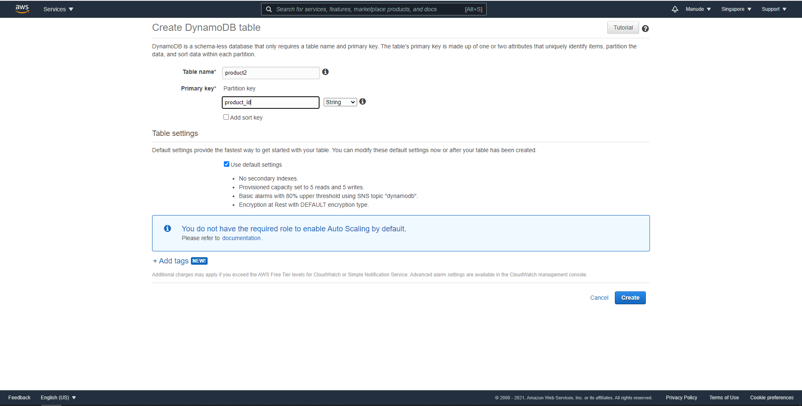
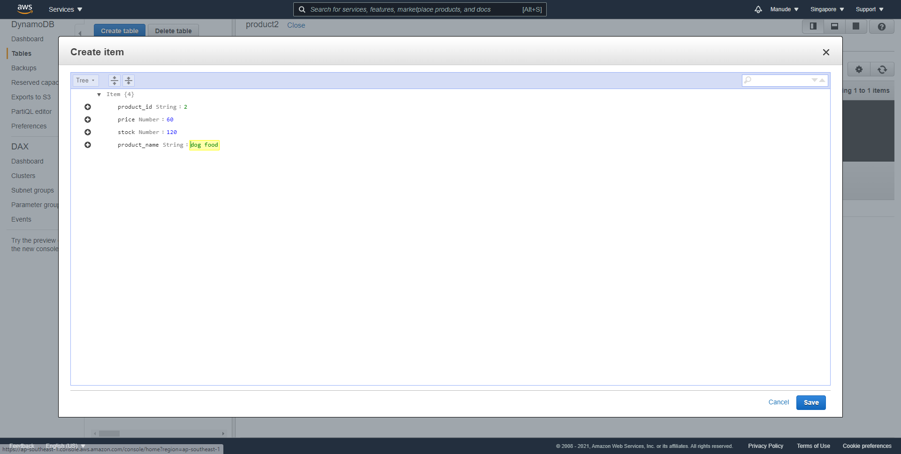
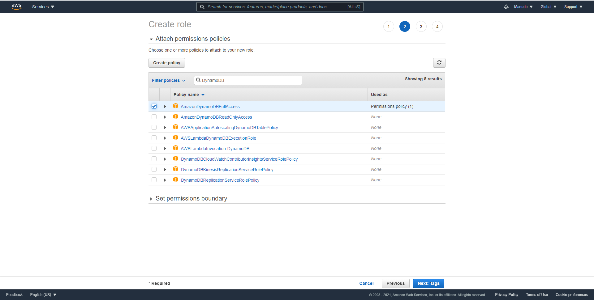
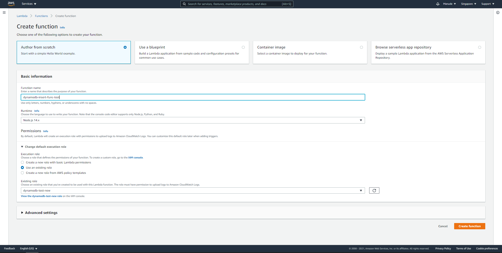
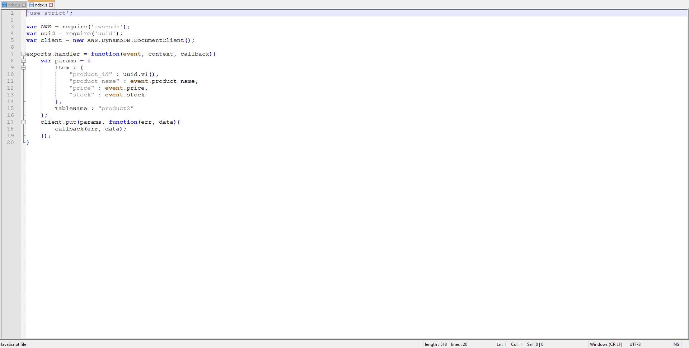
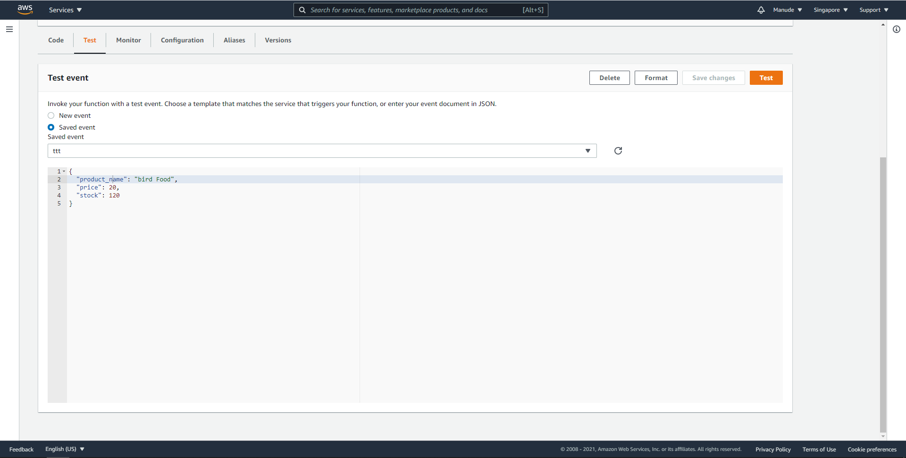
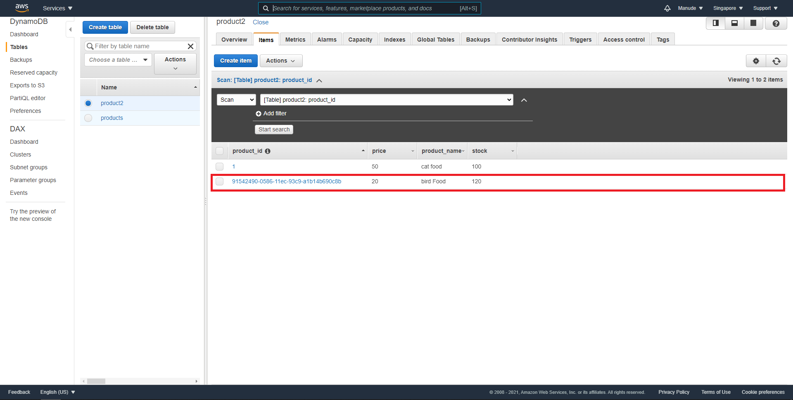
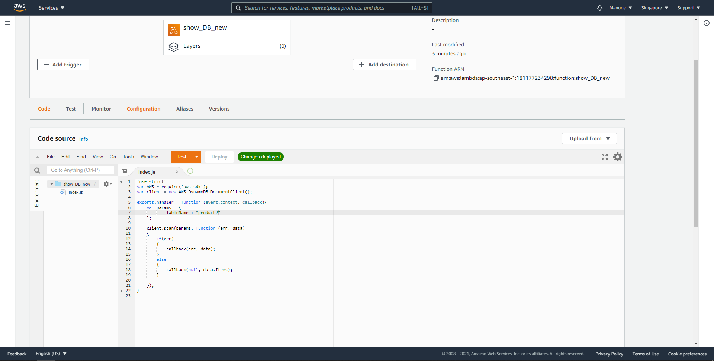
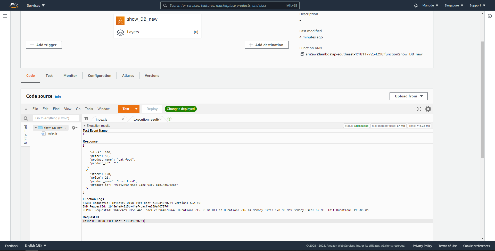

DynamoDB คือ Database แบบ NoSQL ให้ไปที่ service->DynamoDB จากนั้นให้ Create Table ขึ้นมาตามรูป ตั้งชื่อ Table และ Primary key แล้วกด create
หลังจาก create เสร็จให้ไปที่ Table ที่เราพึ่งสร้างเราสามารถ เพิ่ม column และข้อมูลในตารางโดยการไปที่ item และ create item ขึ้นมาตามภาพ เสร็จแล้วกด save
นอกจากนี้เรายังสามารถใช้ Lambda Function ในการ insert ข้อมูลลงไปได้ด้วยโดยทำดังนี้ ขั้นตอนแรกต้องสร้าง user ที่สามารถเข้าถึง DynamoDB ได้ก่อนไปที่ IAM->Role->create role-> common use case -> lambda ต่อมาให้ create Policy พิมพ์ DynamoDB เลือกที่ Full Access ตามรูปด้านล่าง
กด next ไปจนกระทั่ง create role เสร็จเรียบร้อยจากนั้นให้ไปที่ Lambda Function ทำการ create function ขึ้นมาและเลือก role ที่พึ่งสร้างไว้ดังรูป
ต่อมาให้ไปโหลด code function ที่ url ด้านล่าง
https://expert-programming-tutor.com/Downloads/t702/lambda-db.zip
แตก file ออกมาแล้วทำการแก้ไขชื่อให้ตรงกับ Table ที่เราสร้างตาม code ด้านล่าง
จากนั้นให้บีบอัด zip ใหม่แล้วทำการ upload function ขึ้นไปที่ lambda และลองทำการ test โดยใส่ param ตามรูปด้านล่าง
เมื่อกด test สำเร็จแล้วให้กลับไปดูที่ DynamoDB ว่ามีข้อมูล Insert มาหรือยังถ้าปรากฏตามรูปด้านล่าง ถือว่า สำเร็จ
ต่อมาให้ทดลองสร้างอีก 1 function คือ showDb เอาไว้แสดงข้อมูลในตารางในรูปแบบของ json ทำทุกอย่างเหมือนกันการสร้าง function ด้านบนเมื่อสร้างเสร็จให้ พิมพ์ code ไปตามนี้และเปลี่ยน tableName ให้ตรงกับที่เราสร้างไว้ เสร็จแล้วให้กด Deploy
ต่อมาให้ลอง test ดูถ้าไม่มี error และได้รับข้อมูลจากตารางของเราถือว่าสำเร็จ ตามรูปด้านล่าง
